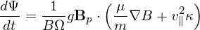
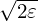
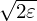

Let us analytically estimate the bounce frequency of barely trapped particles, i.e., particle satisfying the critical condition (76),
|
| (97) |
i.e., v∥ = v, where v∥ is the parallel velocity on the low-field-side midplane.
The distance along the magnetic field line travelled in half an orbit is about 2πR0q, then the time needed is then given by
|
| (98) |
The above approximation is rough since v∥ changes between zero and v and we still use a constant value, v, in approximating it.
Then the bounce (angular) frequency is given by
|
| (99) |
which turns out to be take the same form as Eq. (95). very strange!